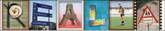

Technologies behind REALIA
o
What’s next?
o
OCLC E-learning report
: make content
accessible
o
Open standards, open source
n
Interoperability with other repositories
o
Sakai, Open Source Portfolio Initiative, Fedora
